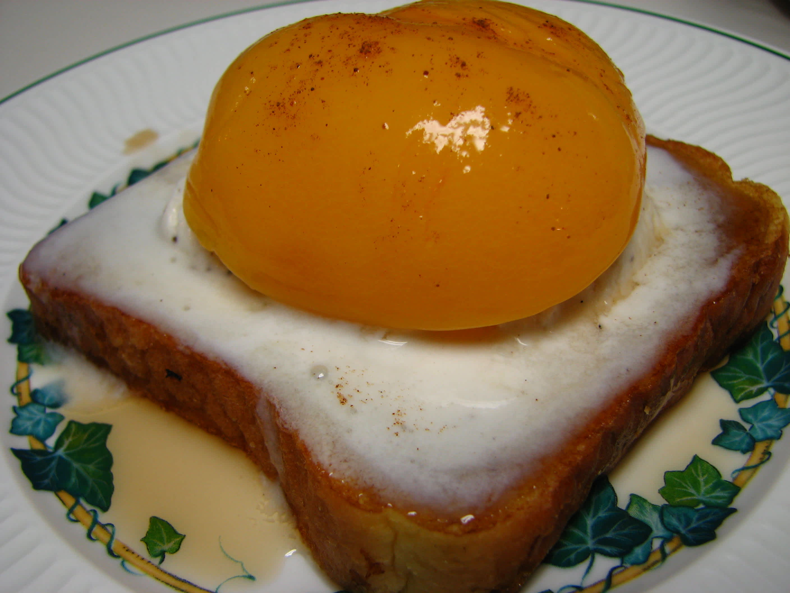

Fake Eggs and Toast!

Ingredients
- 4 slices cinnamon flavor frozen French toast
- 1 pint vanilla ice cream
- 1 (16 ounce) can canned peach halves (reserving syrup) or (16 ounce) can apricot halves in light syrup (reserving syrup)
- cinnamon sugar, to taste
- maple syrup (optional)
Instructions
- Toast french toast slices according to package directions (you may also use your own leftover slices of French toast).
- Let cool, then set onto 4 serving plates.
- Scoop out 4 ovals of ice cream using an ice cream spade or a large serving spoon (to achieve a flatter, more oval shape) and set them on top of each piece of toast.
- Use the back of a spoon to press a hollow into the center of each scoop of ice cream.
- Set a peach half into each hollow, rounded sides up -- to look like the yolks of fried eggs.
- Pour the syrup (either the reserved syrup from the fruit or maple syrup) into a small pitcher and serve on the side as "syrup" and garnish each portion with cinnamon sugar. If you really want to be sneaky, put some cinnamon in a clean pepper shaker and sugar in the salt shaker.